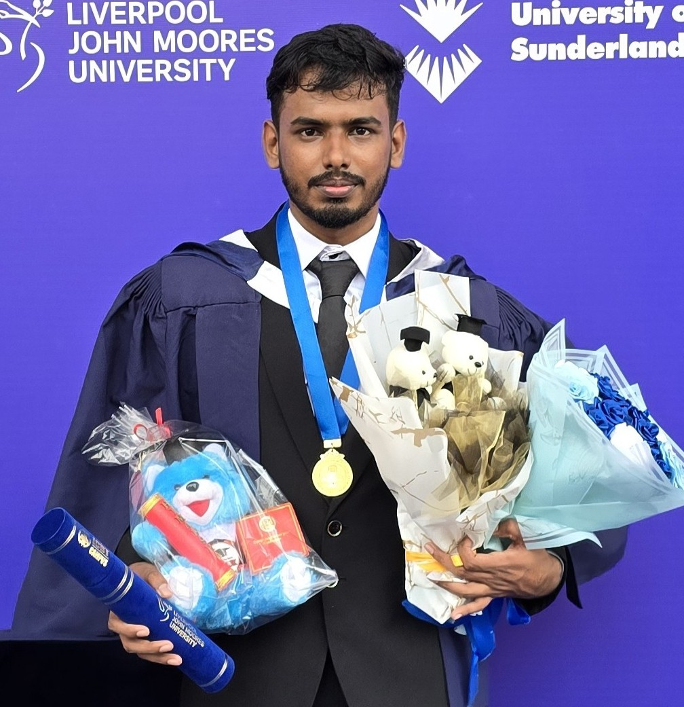

Rathnayaka
Higher Diploma graduate in Electrical & Electronic Engineering with Distinction and Academic Excellence Award. Currently pursuing BEng at the University of Sunderland. Building at the intersection of silicon and intelligence — from custom 8-bit processors to autonomous SLAM robots.
[YOUR PERSONAL STORY — Replace this placeholder with 2–4 paragraphs about your engineering journey, what drives your passion for processor design and robotics, your Distinction achievement, and your long-term goals.]
BEng Electrical & Electronic Engineering
University of Sunderland · ICBT Campus, Colombo
January 2026 — Present
HD Electrical & Electronic Engineering
Liverpool John Moores Univ. · ICBT Campus
Oct 2023 — Aug 2025 · Academic Excellence Award
BSc Natural Science
The Open University of Sri Lanka
April 2024 — Present · Applied Math, Physics, CS
BEng Final Year Project · University of Sunderland · Supervisor: Dr. Kasun Weranga
Designed a complete 8-bit multi-cycle processor platform in SystemVerilog with a custom 16-bit instruction set. The centrepiece is a Q-learning-based adaptive cache controller that dynamically selects between cache-fill, bypass, and prefetch-oriented actions by observing workload patterns (hotset, streaming, conflict, random, mixed). Implemented hardware guardrails — oscillation clamp, regression fallback, bandwidth cap, conflict override — for stable policy transitions. Verified with directed testbench (308 checks, zero failures) and full-core UVM verification (zero warnings/errors/fatals). Synthesised and implemented in Vivado meeting 50 MHz timing.
HD Final Year Project · LJMU · Group: ROBOSERVE · Supervisor: Mr. Ruwan Fernando
Developed an advanced autonomous navigation system integrating Semantic-Aware SLAM with Reinforcement Learning and triple-layer safety protocols. The system combined multi-sensor fusion (LiDAR, IMU, RGB camera, odometry) with YOLO-based semantic segmentation for environment understanding. Three navigation strategies were designed and benchmarked: (1) traditional SLAM + path planning using Google Cartographer, (2) end-to-end RL navigation, and (3) the selected hybrid SLAM-RL approach with PPO & SAC agents from Stable-Baselines3. The hardware platform features a Raspberry Pi 5 brain with ESP32-S3 motor control, LiDAR, IMX477 camera, MPU-6050 IMU, HC-SR04 ultrasonic arrays, and VL53L0X ToF sensors.
Google Cartographer + Nav2 path planning. Reliable but rigid — no adaptive learning.
Stable-Baselines3 PPO & SAC. Adaptive but no geometric map for precision localisation.
SLAM precision + RL adaptability + YOLO semantics + triple-layer safety. Best of all worlds.
[ADD: RoboServe description — hardware, capabilities, AI features, and what makes it a hospitality robot.]
ROS 2 Robot Platform
[ADD: PEBBLES description — hardware platform, navigation features, what makes it distinct from the SLAM robot.]
Verilog · FPGA Simulation
Designed and implemented a 10:4 priority encoder in Verilog that identifies and displays the highest-priority alert signal on a 7-segment display. Demonstrated the full FPGA design flow: design → simulation → synthesis → implementation. Maps directly to interrupt controller principles found in embedded processors.
Arduino · Sensors · Embedded Control
Designed an Arduino-based Automated Guided Vehicle with LDR-based stop logic for autonomous material transport in garment manufacturing. Developed prototype control logic including guidance, obstacle response, and stop-station detection. A miniature version of the warehouse automation systems used in modern logistics.
Embedded · ADC · LCD · Irrigation Control
Developed a PIC microcontroller-based system that reads soil moisture via ADC, displays live readings on an LCD, and automatically activates irrigation. Demonstrates real-world sensor interfacing, analog-to-digital conversion, and embedded control logic — a foundation of modern smart agriculture systems.
Control Engineering · Simulink · PID
Modelled and simulated the classic ball-on-beam dynamic control problem in MATLAB Simulink. Applied PID control to achieve stable ball positioning, analysed transient response, steady-state error, and stability margins. The same principles underpin aircraft autopilots, industrial process control, and robotic balancing systems.
Biomedical Signal Processing · FFT · MATLAB
Processed noisy ECG biomedical signals in MATLAB using Fast Fourier Transform and digital filtering. Added controlled noise levels and extracted signal characteristics in the frequency domain. Demonstrates hands-on experience with biomedical signal processing — directly relevant to wearable health monitoring and medical device engineering.
Industrial Automation · Ladder Logic · Pneumatics
Simulated a complete industrial metal shaping process in Automation Studio using PLC ladder logic and pneumatic sequencing. Implemented sequential control: clamp → move tool → shape → return → release. Directly applicable to manufacturing automation — the same architecture used in modern CNC and robotic manufacturing cells.
Digital Logic · Combinational Design · Proteus
Designed a digital pump control system using combinational logic gates and simulated float switches in Proteus, with manual override capability. Demonstrates that control decisions can be implemented entirely in hardware logic — without software — a key insight in digital systems design.
Hayleys Fabric PLC · Neboda, Sri Lanka
[ADD: Your early 2023 projects — logic design, analog electronics, first FPGA experiments, and other foundational work.]
Built PIC-based soil moisture monitoring and irrigation systems. Designed Arduino-based AGV for garment industry automation. Modelled ball-on-beam PID control in Simulink. Processed ECG biomedical signals using FFT and digital filtering in MATLAB. Designed PLC-based metal shaping machine with pneumatic sequencing. Statistical dataset analysis using SPSS on 50-variable electrical engineering dataset.
Completed HD Final Year Project: Semantic-Aware SLAM Robot with Reinforcement Learning and Triple-Layer Safety (Group ROBOSERVE). Implemented RTAB-Map SLAM, PPO/SAC RL agents with Stable-Baselines3, YOLO semantic segmentation, and triple-layer safety in ROS 2 / Gazebo. Simultaneously completed Electrical Engineering internship at Hayleys Fabric PLC — working on industrial VFDs, motor control circuits, and Stenter machine process optimisation. Graduated HD with Distinction and Academic Excellence Award.
BEng Final Year Project: Adaptive Cache Controller on custom 8-bit processor in SystemVerilog. Research contribution: hardware-enforced legal-action mask for bounded RL exploration — addressing an identified gap in adaptive cache literature. Full-core UVM verification with zero failures. FPGA-targeted synthesis meeting 50 MHz. Simultaneously pursuing BSc Natural Science at OUSL.
[ADD: Your long-term career and research goals — industry target, dream company, PhD ambitions, or open-source hardware projects you want to pursue.]
Systems Thinking
Designs complete end-to-end architectures before implementation
First-Principles Analysis
Traces behaviour to underlying mechanisms, not just surface patterns
Research Orientation
Identifies literature gaps and frames contributions clearly
Cross-Domain Engineering
RTL + robotics + control + signal processing simultaneously
Verification Mindset
Designs for testability — directed + constrained-random + UVM
Actively seeking entry-level RTL, FPGA, or digital design opportunities. Open to internships, graduate roles, and research collaborations.
Open to opportunities at companies working on: